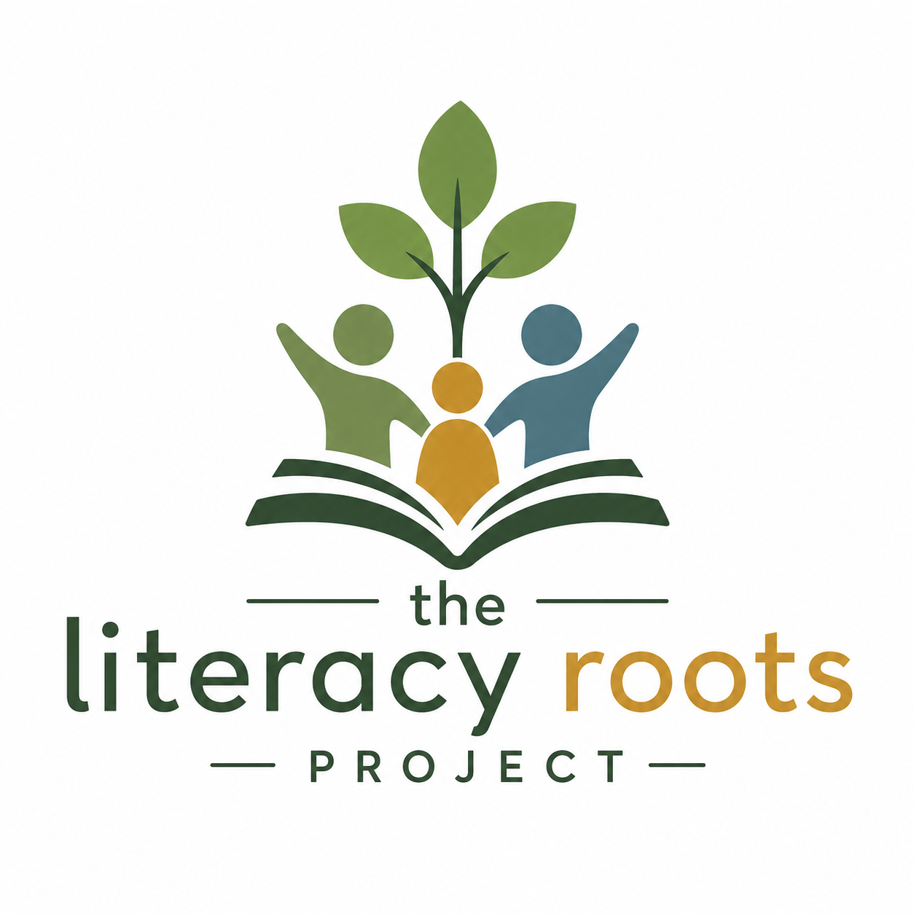
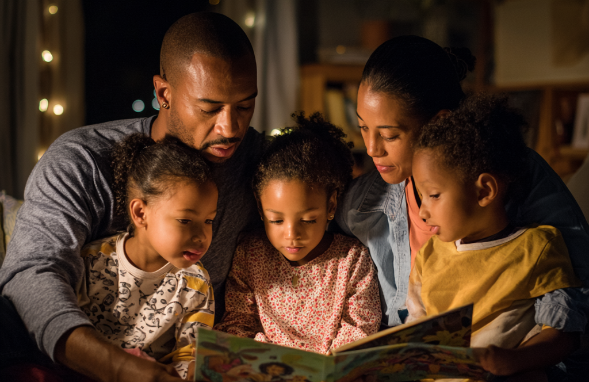
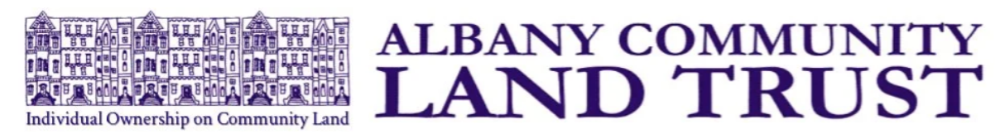
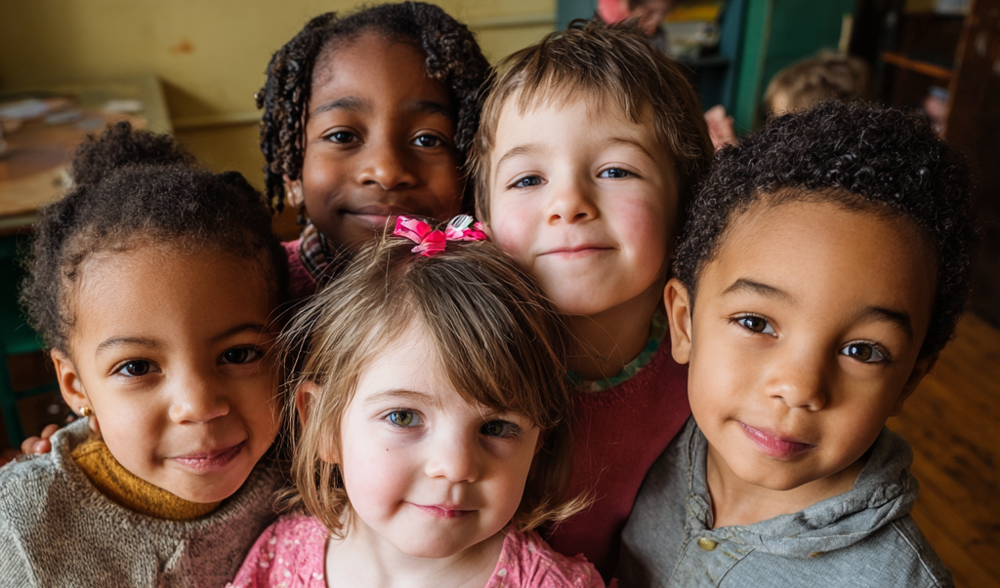
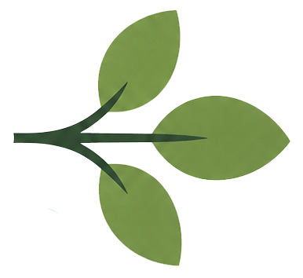

Supporting children, parents, and caregivers through literacy-based programs that nurture lifelong learning, healthy homes, and stronger communities.
Donate
Long before a child enters a classroom, their future is already taking shape. Early experiences with language, books, and conversation are among the strongest predictors of lifelong academic success, health, and opportunity.
Yet too many children begin school already behind—and those early gaps often widen over time. Children who are not reading proficiently by third grade are far more likely to struggle academically and face long-term economic challenges. Research also shows strong links between low literacy, school disengagement, and involvement in the juvenile justice system.
But this trajectory is not inevitable.
When parents and caregivers are supported as a child’s first teachers, everyday moments become powerful opportunities for learning. With the right tools and encouragement, families can build the language and literacy foundations children need to thrive—long before they ever enter a classroom.
At The Literacy Roots Project, we believe that lasting change begins in a healthy home, where literacy first takes root in the lives of children and families.
1/2-day workshop empowering parents and caregivers of children ages 0-3 with the knowledge, strategies, and confidence to support children’s language development, vocabulary growth, and early reading skills, building strong foundations for lifelong learning, a literacy-rich home environment, and academic success.
An 8-week workshop for pregnant moms and parents and caregivers of children ages 0-3. Learn about stages of child development, health and nutrition, home and community safety, early literacy development, positive parenting, preventing domestic/family violence, while supporting safe, warm & nurturing home environments.
Providing high-quality early literacy experiences for children ages 4–6 that build foundational skills, spark curiosity, and foster a love of learning. Our program helps children enter school confident, prepared, and ready to thrive from their very first day in the classroom.
Building strong community partnerships that connect families to resources, support services, and local opportunities that promote family well-being, strengthen stability, and reduce barriers--ultimately allowing caregivers to focus on their family's success.
A relationship-based program that connects parents and caregivers with trained mentors who provide guidance, encouragement, and support in child development, positive parenting, early literacy practices, and family well-being, strengthening safe and stable home environments.
More than 70% of incarcerated adults read below a fourth-grade level.
80% of low-income fourth graders are not proficient readers.
Children who are not proficient readers by third grade are 4 times more likely to leave school without a diploma.
70% of U.S. fourth graders are not reading proficiently.
The Literacy Roots Project advances educational equity and economic opportunity by empowering children and families through early literacy, parent engagement, and two-generation learning initiatives. We recognize that lasting change occurs when children and the adults who care for them are supported together. Through family-centered education, literacy enrichment, and community partnerships, we help break intergenerational cycles of poverty, strengthen family stability, and create pathways to lifelong success. Our work is rooted in the belief that every child deserves the opportunity to thrive and that strong families are the foundation of strong communities.
Through innovative family-centered programs, literacy enrichment opportunities, and collaborative community partnerships, we address barriers that disproportionately impact underserved families and help ensure that every child has the opportunity to enter school prepared to learn, grow, and succeed. By nurturing literacy at its roots—the family—we create lasting change that strengthens children, families, and communities for generations.



Lisa Ewart serves as Program Director of The Literacy Roots Project, where she provides strategic leadership, program development, and operational oversight for initiatives that strengthen early literacy, family engagement, and community well-being. With extensive experience in nonprofit management, curriculum design, volunteer coordination, grant-funded programming, and community outreach, she is dedicated to creating innovative programs that help children and families build strong foundations for lifelong learning and success.
In her previous role as Program Manager, Lisa designed and led literacy-focused educational programs and parenting workshops, developed community partnerships, secured funding and in-kind support, and implemented data-driven systems to measure program impact. She also served as an Adjunct Professor of Psychology, bringing classroom teaching experience and a strong understanding of child development, learning, and human behavior to her work with children and families. Lisa holds a Master of Arts in Psychology and a Bachelor of Arts in Philosophy, combining educational expertise, organizational leadership, and a deep commitment to empowering families through literacy and education.
Samantha Hicks brings more than two decades of nonprofit leadership experience in organizational governance, strategic planning, grants management, donor engagement, and fiscal oversight. Throughout her career, she has successfully secured and managed grant funding, cultivated relationships with stakeholders and community partners, guided organizational development initiatives, and overseen financial operations that promote long-term sustainability and mission impact. Her expertise in budgeting, compliance, and nonprofit administration helps ensure that the Foundation's programs remain effective, accountable, and responsive to community needs.
Prior to her nonprofit career, Samantha spent 17-years in the maritime education industry and holds a U.S. Coast Guard 500-ton Ocean Master’s license. She served as Captain of the historic Hudson River Sloop Clearwater and is currently the Board Chair. After relocating to New York's Capital Region with her family, she earned a Master of Public Administration from the University at Albany. A passionate advocate for early childhood education and community engagement, Samantha recognizes that a strong literacy foundation strengthens families, lifts up the neighborhoods in which they live, and creates lifelong opportunities for success. Outside of her professional work, she enjoys the region's arts and music scene and spending time outdoors hiking with her family.
Christina is a dedicated early childhood educator with more than 10 years of experience teaching young children in Early Childhood and Universal Pre-K classrooms. She earned her Bachelor's Degree in Childhood Education from The College of Saint Rose and is passionate about helping children develop strong literacy skills and a lifelong love of learning.
As both an educator and a mother, Christina understands the importance of supporting the whole family in a child's learning journey. Through The Literacy Roots Project, she works to build children's confidence, strengthen early literacy foundations, and provide families with practical tools that encourage learning and growth at home.